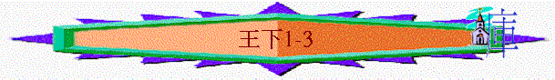

|
屬神國度的衰落 |
|||
|
二王—行神的旨意得堅固
|
二國—不專心順服終分裂
|
二先知—神能力彰顯仍剛硬
|
二結局—繼續行惡至終亡國
|
|
王上1-10 |
王上11-16 |
王上17-王下9:4 |
王下9:5-25:30 |
三.二先知----神能力彰顯仍剛硬(王上17-王下9:4)
1.以利亞先知(王上17-王下2:18)
G.他的晚年(王下1-2)
a.責備亞哈謝
(1)王的錯誤----沒尋求神
「亞哈死後，摩押背叛以色列。亞哈謝在撒瑪利亞，一日從樓上的欄杆裡掉下來，就病了；於是差遣使者說：「你們去問以革倫的神巴力西卜，我這病能好不能好。」但耶和華的使者對提斯比人以利亞說：「你起來，去迎著撒瑪利亞王的使者，對他們說：『你們去問以革倫神巴力西卜，豈因以色列中沒有神嗎？』所以耶和華如此說：『你必不下你所上的床，必定要死！』」以利亞就去了。」王下1:1-4
「學生和先生一樣，僕人和主人一樣，也就罷了。人既罵家主是別西卜（別西卜：是鬼王的名），何況他的家人呢？」太10:25
～巴力西卜(Baal Zebul)是非利士人的假神，原意有蒼蠅之王的意思，可能有能力驅逐帶有傳染病的蒼蠅，帶醫治病人，後來新約經文使用別西卜，猶太人稱牠為鬼王
～王在病患中，寧願尋求巴力西卜，不尋求耶和華神，神透過先知責備亞哈謝，並預言他必定要死
(2)人的扭轉
「王問他們說：「迎著你們來告訴你們這話的，是怎樣的人？」回答說：「他身穿毛衣，腰束皮帶。」王說：「這必是提斯比人以利亞。」於是，王差遣五十夫長，帶領五十人去見以利亞，他就上到以利亞那裡；以利亞正坐在山頂上。五十夫長對他說：「神人哪，王吩咐你下來！」」王下1:7-9
「耶和華的使者對以利亞說：「你同著他下去，不要怕他！」以利亞就起來，同著他下去見王，」王下1:15
～王派五十夫長要見以利亞，若是要懇求以利亞向神求情，王可以親自去見以利亞，或派使者求情，但王派五十夫長及五十軍兵來到神人前，明顯要用武力，脅持以利亞，強求他將這咒詛留轉，而以利亞應也感到懼怕(若一個人去到王前)
(3)神的旨意
(A)王的吩咐與神的權能
「以利亞回答說：「我若是神人，願火從天上降下來，燒滅你和你那五十人！」於是有火從天上降下來，燒滅五十夫長和他那五十人。王第二次差遣一個五十夫長，帶領五十人去見以利亞。五十夫長對以利亞說：「神人哪，王吩咐你快快下來！」以利亞回答說：「我若是神人，願火從天上降下來，燒滅你和你那五十人！」於是神的火從天上降下來，燒滅五十夫長和他那五十人。王第三次差遣一個五十夫長，帶領五十人去。這五十夫長上去，雙膝跪在以利亞面前，哀求他說：「神人哪，願我的性命和你這五十個僕人的性命在你眼前看為寶貴！」1:10-13
～王嘗試用吩咐及武力要求以利亞下來見他，但以利亞用天火降臨，顯明祂是神的代表，他的權能高於王的命令，他不受人的吩咐轄制的！
(B)人的懼怕與神的應許
「耶和華的使者對以利亞說：「你同著他下去，不要怕他！」以利亞就起來，同著他下去見王，」王下1:15
(C)王的心願與神的定意
「對王說：「耶和華如此說：『你差人去問以革倫神巴力西卜，豈因以色列中沒有神可以求問嗎？所以你必不下所上的床，必定要死！』」」王下1:16
～亞哈謝當然不想死在牀上，但因他沒尋求神，所以神的定意仍不改變，他必不下所上的牀，必定要死
(4)王的結局
「亞哈謝果然死了，正如耶和華藉以利亞所說的話。因他沒有兒子，他兄弟約蘭接續他作王，正在猶大王約沙法的兒子約蘭第二年。」2:17
b.提升以利沙
「耶和華要用旋風接以利亞升天的時候，以利亞與以利沙從吉甲前往。」」2:1
～神要用旋風接以利亞昇天，如以諾一樣，他們如沒經歷死亡
(1)考驗
(A)忠誠的跟隨
「以利亞對以利沙說：「耶和華差我往伯特利去，你可以在這裡等候。」以利沙說：「我指著永生的耶和華，又敢在你面前起誓，我必不離開你。」於是二人下到伯特利。」2:2
「以利亞對以利沙說：「耶和華差遣我往耶利哥去，你可以在這裡等候。」以利沙說：「我指著永生的耶和華，又敢在你面前起誓，我必不離開你。」於是二人到了耶利哥。」2:4
「以利亞對以利沙說：「耶和華差遣我往約但河去，你可以在這裡等候。」以利沙說：「我指著永生的耶和華，又敢在你面前起誓，我必不離開你。」於是二人一同前往。」2:6
～以利亞先後在吉甲、伯特利、耶利哥、約但河地方，叫以利沙在那些地方等他，但以利沙始終決定不離開以利亞
(B)信心的認定
「住伯特利的先知門徒出來見以利沙，對他說：「耶和華今日要接你的師傅離開你，你知道不知道？」他說：「我知道，你們不要作聲。」」2:3
「住耶利哥的先知門徒就近以利沙，對他說：「耶和華今日要接你的師傅離開你，你知道不知道？」他說：「我知道，你們不要作聲。」2:5
～為何以利沙不離開以利亞呢？除了因他對以利亞的忠誠外，因他有信心，他因信而知道神要接以利亞去，但在吉甲、伯特利、耶利哥地，神仍未接以利亞，以利沙卻仍有信心，所以他要把握最後與以利亞一起的機會
(2)請求
「有先知門徒去了五十人，遠遠的站在他們對面；二人在約但河邊站住。以利亞將自己的外衣捲起來，用以打水，水就左右分開，二人走乾地而過。過去之後，以利亞對以利沙說：「我未曾被接去離開你，你要我為你做什麼，只管求我。」以利沙說：「願感動你的靈加倍地感動我。」以利亞說：「你所求的難得。雖然如此，我被接去離開你的時候，你若看見我，就必得著；不然，必得不著了。」」王下2:7-10
「耶和華啊，求你應允我，應允我！使這民知道你─耶和華是 神，又知道是你叫這民的心回轉。」王上18:37
「他必有以利亞的心志能力，行在主的前面，叫為父的心轉向兒女，叫悖逆的人轉從義人的智慧，又為主預備合用的百姓。」」路1:17
～以利沙求感動以利亞的靈加倍感動他，而以利亞說他所求的難得，難得在那裡？可能因為以下原因
(A)看到屬靈的關鍵
～他知道以利亞的能力源頭在於神的靈，不是人的能力，是屬天的能力
(B)顯出更大的心志
～他不單想有以利亞的能力，更渴慕加倍的
(C)盼望子民的回轉
～以利亞得能力的原因是要百姓及君王看到自己是代表神，神的說話是會成就，他要神的子民回轉
～以利沙也應知道得能力的至終目標，是要叫更多屬神的百姓回轉歸神
(3)印證
(A)見到神僕昇天
「以利亞說：「你所求的難得。雖然如此，我被接去離開你的時候，你若看見我，就必得著；不然，必得不著了。」他們正走著說話，忽有火車火馬將二人隔開，以利亞就乘旋風升天去了。以利沙看見，就呼叫說：「我父啊！我父啊！以色列的戰車馬兵啊！」以後不再見他了。於是以利沙把自己的衣服撕為兩片。」2:10-12
～火車不是接載以利亞升天，只是將他們二人隔開，以利亞是乘旋風昇天，當以利沙見到他昇天時，就印證以利沙得著神的靈加倍的感動
(B)經歷神僕的能力
「他拾起以利亞身上掉下來的外衣，回去站在約但河邊。他用以利亞身上掉下來的外衣打水，說：「耶和華以利亞的神在那裡呢？」打水之後，水也左右分開，以利沙就過來了。」2:13-14
(C)聽到別人的感言
「住耶利哥的先知門徒從對面看見他，就說：「感動以利亞的靈感動以利沙了。」他們就來迎接他，在他面前俯伏於地，」2:15
(D)辨識獨特的看見
「對他說：「僕人們這裡有五十個壯士，求你容他們去尋找你師傅，或者耶和華的靈將他提起來，投在某山某谷。」以利沙說：「你們不必打發人去。」他們再三催促他，他難以推辭，就說：「你們打發人去吧！」他們便打發五十人去，尋找了三天，也沒有找著。以利沙仍然在耶利哥等候他們回到他那裡；他對他們說：「我豈沒有告訴你們不必去嗎？」」2:16-18
～耶利哥先知的門徒想見回以利亞，但他們至終尋不見他，只有以利沙一人能看見以利亞昇天，也印證他才是以利亞的繼承者
2.以利沙先知(王下2:28-9:4)
A.他的能力
a.治好的能力
「耶利哥城的人對以利沙說：「這城的地勢美好，我主看見了；只是水惡劣，土產不熟而落。」以利沙說：「你們拿一個新瓶來，裝鹽給我」；他們就拿來給他。他出到水源，將鹽倒在水中，說：「耶和華如此說：『我治好了這水，從此必不再使人死，也不再使地土不生產。』」於是那水治好了，直到今日，正如以利沙所說的。」王下2:19-22
「這城和其中所有的都要在耶和華面前毀滅；只有妓女喇合與他家中所有的可以存活，因為他隱藏了我們所打發的使者。」書6:17
「當時，約書亞叫眾人起誓說：「有興起重修這耶利哥城的人，當在耶和華面前受咒詛。他立根基的時候，必喪長子，安門的時候，必喪幼子。」」書6:26
～耶利哥城本是被咒的城，可能因此土質也不好，但以利沙用鹽倒在水中，便治好水質了
～而他的能力在於「耶和華如此說」，顯出神的話沒有一句不帶能力，也顯出他是神的代表
b.咒詛的能力
「以利沙從那裡上伯特利去，正上去的時候，有些童子從城裡出來，戲笑他說：「禿頭的上去吧！禿頭的上去吧！」他回頭看見，就奉耶和華的名咒詛他們。於是有兩個母熊從林中出來，撕裂他們中間四十二個童子。以利沙從伯特利上迦密山，又從迦密山回到撒瑪利亞。」王下2:23-25
「耶和華他們列祖的神因為愛惜自己的民和他的居所，從早起來差遣使者去警戒他們。他們卻嘻笑神的使者，藐視他的言語，譏誚他的先知，以致耶和華的忿怒向他的百姓發作，無法可救。」代下36:15-16
～童子可能是指年輕的人，他們嬉笑神的使者，他代表不尊重神，以利沙不是單為己而咒詛他們，他是奉耶華的名的，神也認同的
c.得勝的能力
(1)以色列王惡事(約蘭)
「猶大王約沙法十八年，亞哈的兒子約蘭在撒瑪利亞登基作了以色列王十二年。他行耶和華眼中看為惡的事，但不至像他父母所行的，因為除掉他父所造巴力的柱像。然而，他貼近尼八的兒子耶羅波安使以色列人陷在罪裡的那罪，總不離開。」3:1-3
～約蘭是亞哈的兒子，亞哈謝的兄弟
～他雖除掉父所造巴力的柱像，但仍不離開耶羅波安的罪，拜金牛犢，行神眼中的惡事
(2)三王合攻摩押
(A)起因
「亞哈死後，摩押王背叛以色列王。」3:5
(B)結盟
「那時約蘭王出撒瑪利亞，數點以色列眾人。前行的時候，差人去見猶大王約沙法，說：「摩押王背叛我，你肯同我去攻打摩押嗎？」他說：「我肯上去，你我不分彼此，我的民與你的民一樣，我的馬與你的馬一樣。」」3:6-7
「於是，以色列王和猶大王，並以東王，都一同去繞行七日的路程；軍隊和所帶的牲畜沒有水喝。」3:9
～除了以色列王外，猶大約沙法王及以東王也結盟攻打摩押
(C)危困
「於是，以色列王和猶大王，並以東王，都一同去繞行七日的路程；軍隊和所帶的牲畜沒有水喝。以色列王說：「哀哉！耶和華招聚我們這三王，乃要交在摩押人的手裡。」」3:9-10
(D)呼求
「約沙法說：「這裡不是有耶和華的先知嗎？我們可以託他求問耶和華。」以色列王的一個臣子回答說：「這裡有沙法的兒子以利沙，就是從前服事以利亞的（原文作倒水在以利亞手上的）。」約沙法說：「他必有耶和華的話。」於是以色列王和約沙法，並以東王都下去見他。」3:11-12
(3)先知預言得勝
(A)回應
「以利沙對以色列王說：「我與你何干？去問你父親的先知和你母親的先知吧！」以色列王對他說：「不要這樣說，耶和華招聚我們這三王，乃要交在摩押人的手裡。」以利沙說：「我指著所事奉永生的萬軍耶和華起誓，我若不看猶大王約沙法的情面，必不理你，不顧你。」3:13-14
(B)受感
「現在你們給我找一個彈琴的來。」彈琴的時候，耶和華的靈（原文作手）就降在以利沙身上。」3:15
「掃羅的臣僕對他說：「現在有惡魔從神那裡來擾亂你。我們的主可以吩咐面前的臣僕，找一個善於彈琴的來，等神那裡來的惡魔臨到你身上的時候，使他用手彈琴，你就好了。」」撒上16:15-16
「從神那裡來的惡魔臨到掃羅身上的時候，大衛就拿琴，用手而彈，掃羅便舒暢爽快，惡魔離了他。」撒上16:23
～古時的人，認為音樂能使人易於領受神明的信息，而昔日大衛也用音樂幫掃羅驅惡魔，當然最重要是神的工作
(C)預言
(a)有水解渴
「他便說：「耶和華如此說：『你們要在這谷中滿處挖溝；因為耶和華如此說：你們雖不見風，不見雨，這谷必滿了水，使你們和牲畜有水喝。』」王下3:16-17
(b)必得勝敵人
「在耶和華眼中這還算為小事，他也必將摩押人交在你們手中。」3:18
(D)應驗
(a)遍地滿了水
「你們必攻破一切堅城美邑，砍伐各種佳樹，塞住一切水泉，用石頭糟踏一切美田。」」3:19
(b)仇敵遭攻破
「次日早晨，日光照在水上，摩押人起來，看見對面水紅如血，就說：「這是血啊！必是三王互相擊殺，俱都滅亡。摩押人哪，我們現在去搶奪財物吧！」摩押人到了以色列營，以色列人就起來攻打他們，以致他們在以色列人面前逃跑。以色列人往前追殺摩押人，直殺入摩押的境內，拆毀摩押的城邑，各人拋石填滿一切美田，塞住一切水泉，砍伐各種佳樹，只剩下吉珥哈列設的石牆；甩石的兵在四圍攻打那城。」3:22-25
(4)三王各回本國
「摩押王見陣勢甚大，難以對敵，就率領七百拿刀的兵，要衝過陣去到以東王那裡，卻是不能；便將那應當接續他作王的長子，在城上獻為燔祭。以色列人遭遇耶和華的大怒（或作：招人痛恨），於是三王離開摩押王，各回本國去了。」3:26-27
～當摩押王見陣勢不妙，就用異教的風俗，將長子獻為祭，這件事也可能引起摩押地的大怒(原文沒有耶和華字)，因此三王可能因此失去信心，怕摩押人反擊，就離開摩押了